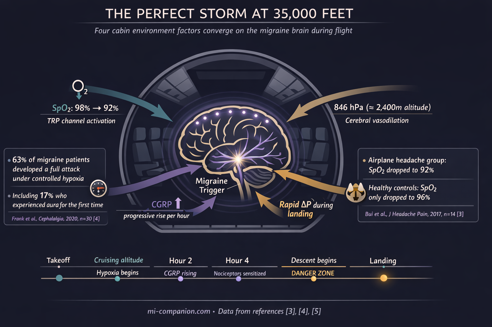
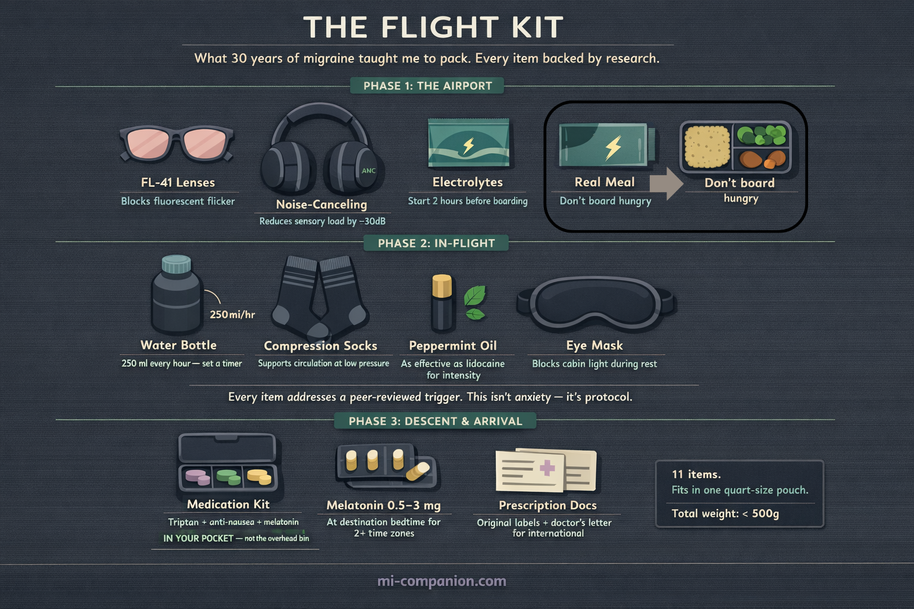

By Rustam Iuldashov
30 years lived experience with chronic migraine | Sources: 25 peer-reviewed references including Cephalalgia (n=30), The Journal of Headache and Pain (39 papers), Frontiers in Neurology (n=30), Neurology (n=17) | Last updated: March 12, 2026
Medical Review: This content is based on peer-reviewed research from Cephalalgia, The Journal of Headache and Pain, Frontiers in Neurology, Frontiers in Physiology, Neurology, The Lancet Neurology, Brain, Journal of Clinical Neuroscience, Headache, and International Journal of Preventive Medicine.
Important Notice: This article is for informational purposes only and does not replace professional medical advice. The author is not a licensed physician or healthcare professional. Always consult your doctor before making changes to your treatment plan.
Key Takeaways
- Airplane cabins impose sustained mild hypoxia. Controlled research shows low-oxygen conditions trigger migraine in up to 63% of susceptible individuals and progressively elevate CGRP — the key migraine neuropeptide — throughout exposure.[4][5]
- The airport is the first trigger zone. Fluorescent lighting, noise, crowds, and stress hormones load your system before boarding. FL-41 or precision-tinted lenses and noise-canceling headphones are functional migraine tools, not luxury items.[9][10]
- Descent is the most dangerous phase. Rapid pressure changes during landing activate trigeminal pain pathways already sensitized by hours of reduced oxygen.[11][13]
- Early medication timing transforms outcomes. Treating while pain is mild produces an 84% pain-free rate at two hours versus 53% when pain has escalated.[16]
- Your medications are allowed through security. TSA permits all prescription drugs in carry-on. For international travel, keep meds in original containers with a doctor’s letter.[18][19]
- The post-landing window is high-risk. Cortisol drops, circadian disruption, and hypoxia recovery converge in the first hours after arrival.[20]
Seat 14C. Seatbelt sign on. The captain announces initial descent. And somewhere behind your left eye, a familiar tightness begins — not from nerves, but from physics. You have forty minutes to landing. Your migraine brain has already started its countdown.
For the billion people worldwide who live with migraine, boarding a plane is not boarding a plane.[1] It is stepping into a sealed metal tube where oxygen drops, pressure shifts, humidity vanishes, and every fluorescent bulb, engine hum, and recycled perfume cloud converges on a nervous system already running close to its limit. An airplane cabin does not add one trigger. It fires them all at once.
But here is what 30 years of migraine have taught me: flying does not have to mean surrendering. The difference between a ruined trip and a manageable flight comes down to protocol — understanding what the cabin does to your brain, and intervening before the cascade begins.
The Oxygen You Are Not Getting
At cruising altitude, cabin pressure simulates roughly 1,800–2,400 meters above sea level.[2] You are breathing thinner air than at ground level. Most passengers notice nothing. A migraine brain notices everything.
A pressure chamber study placed seven airplane headache sufferers alongside seven matched controls in a simulated cabin environment. Healthy participants saw oxygen saturation drop from 98% to 96%. The headache group plunged from 98% to 92%.[3] Six percentage points. In neurological terms, a chasm.
Hypoxia — reduced oxygen reaching the brain — is now recognized as one of the most potent experimental migraine triggers in research. At the University of Innsbruck, 30 migraine patients breathed low-oxygen air simulating 4,500 meters for up to six hours. Eighty percent developed headache. Sixty-three percent developed full migraine — nausea, photophobia, phonophobia. Seventeen percent experienced aura, including two people who had never had aura before in their lives.[4]
The mechanism is molecular. Hypoxia generates reactive oxygen species that activate pain-sensitive TRP channels on meningeal nerve fibers — the trigeminal pathways that drive migraine pain.[4] The longer the exposure, the higher the blood levels of CGRP, the neuropeptide at the center of migraine inflammation. In a follow-up study measuring CGRP throughout a hypoxic challenge, levels rose progressively with every passing hour.[5]
A commercial cabin is not a laboratory at 4,500 meters. But it is a sustained, hours-long, low-oxygen box — and for a brain already primed for migraine, even moderate hypoxia can lower the threshold from stable to attack.

The Sensory Gauntlet Before You Even Board
Most travel advice ignores this: your migraine clock does not start at takeoff. It starts at the airport door.
An airport terminal is a sensory assault designed by people who do not get migraines. Fluorescent lighting dominates every corridor, every security lane, every gate — and those tubes flicker at frequencies invisible to the eye but fully registrable by the migraine brain.[6] Research shows that fluorescent light provokes abnormal cortical activation in migraine patients even between attacks, triggering photophobia, eye pain, and sometimes a full-blown episode.[7] Over 90% of migraine sufferers report light sensitivity during attacks. Many are chronically photosensitive between them.[8]
Now add PA announcements. Crowd noise. Jet fuel on the jetway. A perfume cloud in duty-free. Stress hormones climbing as you sprint through security. By the time you reach your gate, the trigger cascade is well underway — and you have not left the ground.
FL-41 tinted lenses were originally developed to neutralize fluorescent light sensitivity. In a randomized trial of children with migraine, FL-41 lenses cut attack frequency from 6.2 to 1.6 per month.[9] Newer optical notch filters that selectively block 480nm wavelengths — the range most activating for migraine brains — improved Headache Impact Test scores in chronic migraine patients over just two weeks.[10] These are not accessories. For airports, they are armor.
Why Descent Is the Danger Zone
If migraine could pick its favorite moment on a flight, it would choose landing.
A systematic review of 39 studies confirmed that airplane headache strikes most often during the descent phase, when cabin pressure changes are steepest and fastest.[11] The physics follow Boyle’s law: as external pressure rises during descent, air trapped in the sinuses contracts. The result is a vacuum effect — what aviation medicine calls “the squeeze.”[12] This pressure differential irritates the ethmoidal nerve, a branch of the trigeminal system, directly activating the same pain architecture that drives migraine.[13]
The timing is cruel. By descent, you have breathed reduced oxygen for hours. Your meningeal nociceptors are sensitized. Your CGRP levels have been climbing. The rapid pressure shift of landing becomes the final trigger — the one that tips a primed system into full attack.
Danish researchers tested this precisely. Volunteers who regularly experienced airplane headache entered a pressure chamber mimicking descent. They developed identical symptoms. Controls felt nothing.[14] The vulnerability is neurological. Not imagined.
Your Medication Strategy: Timing Is Everything
On the ground, most migraineurs know the rule: treat early. In the air, this rule becomes life-or-death for your trip — because you cannot pull over, lie down in a dark room, or walk to a pharmacy at 35,000 feet.
The TEMPO study tracked 144 migraine patients through multiple attacks. Taking a triptan within one hour of headache onset produced pain-free status at two hours in 53% of cases. Waiting longer — just an hour longer — dropped that rate to 30%.[15] A separate analysis was more dramatic: treating during the mild pain phase yielded an 84% pain-free rate at two hours. Waiting until moderate-to-severe pain cut it nearly in half, to 53%.[16]
On an airplane, this means one thing: your acute medication cannot be in the overhead bin. It belongs in the seat-back pocket. In your jacket. Within arm’s reach. And you need to recognize your prodrome — yawning, neck stiffness, light sensitivity, difficulty concentrating — because at altitude, those are not minor inconveniences. They are a 40-minute warning siren.
One more complication. During migraine, the stomach slows. Gastric motility drops, delaying oral medication absorption.[17] At altitude, this effect may worsen. For frequent flyers, nasal spray or orally disintegrating tablet formulations bypass the gastrointestinal tract entirely — offering more reliable absorption when your stomach has stopped cooperating. Discuss these options with your neurologist before your next flight.
Getting Your Medications Through Security
This worry keeps many migraineurs anxious before travel. It should not.
In the United States, the TSA permits all prescription and over-the-counter medications in carry-on baggage. Pill-form medications have no quantity restrictions. Liquid medications are exempt from the standard 3.4-ounce rule when medically necessary — though you must declare them at the screening checkpoint.[18]
International travel demands more preparation. The CDC recommends keeping all medications in original, labeled containers with your name and prescribing physician clearly visible.[19] Some countries require a doctor’s letter for injectables or controlled substances. Pill organizers — convenient as they are — can create identification problems at foreign customs checkpoints.[19]
The non-negotiable rule: never check your migraine medication. Checked bags get lost, delayed, and baked in cargo holds. Your acute treatment stays on your body. In a clear pouch, in your personal item, accessible without standing up.

The 3-Phase Flight Protocol
Phase 1 — The Airport (Pre-Board)
FL-41 or precision-tinted lenses go on at the terminal door. Noise-canceling headphones or earplugs go in at security. Eat a real meal before boarding — blood sugar drops amplify migraine susceptibility. Start sipping electrolyte water at least two hours before departure. Arrive early. Rushing through an airport spikes cortisol, and the crash after you sit down is a documented migraine trigger: in the first six hours after stress declines, migraine risk is nearly five times baseline.[20]
Phase 2 — In-Flight
Request a window seat over the wing — least cabin motion, plus control over the shade. Compression socks on immediately. Water: 200–250 ml every hour, timer set. Alcohol: none. It accelerates dehydration in the already-desiccated cabin and is an independent migraine trigger.[21] If smells bother you — other passengers’ meals, perfume, cleaning products — keep peppermint oil on your wrist. A clinical trial found intranasal peppermint oil comparable to lidocaine for reducing migraine intensity.[22] During descent, try the Valsalva maneuver (gently blowing against a pinched nose) every 30 seconds to equalize sinus pressure and soften the “squeeze” on trigeminal nerve endings.
Phase 3 — After Landing
The first two hours on the ground are your highest-risk window. Cortisol is crashing. Your circadian rhythm is dislocated. Your brain is recovering from hours of mild hypoxia. Do not schedule anything demanding. Rest. Continue hydrating. If you crossed two or more time zones, take melatonin (0.5–3 mg) at your destination’s bedtime to start resetting your internal clock.[23] Switch all medication schedules to local time immediately — no gradual transition.
⚠️ When to Seek Emergency Help
A sudden, severe headache during or after a flight that feels fundamentally different from your usual migraine — especially one you would describe as the worst headache of your life — demands emergency evaluation. Do not dismiss it as “just a bad migraine.”
If you experience confusion, vision changes, loss of coordination, slurred speech, or one-sided weakness at any point during air travel, call for help immediately. Flight attendants carry emergency medical kits and can contact ground-based physicians in-flight.
📱 SCREENSHOT THIS: The Migraineur’s Flight Checklist
Phase 1: The Airport (Pre-Board)
- Armor up at the door. FL-41 or tinted glasses ON before entering the terminal.
- Mute the chaos. Noise-canceling headphones ON by the security line.
- Fuel up. Eat a real meal. Start sipping electrolytes 2 hours before takeoff.
- Pace yourself. Arrive early. Rushing spikes cortisol; the crash that follows is a documented trigger.[20]
- Meds check. Acute medication is ON YOUR BODY or in your personal item. Never overhead. Never checked.
Phase 2: In-Flight (Cruising)
- Secure the environment. Window shade DOWN. Compression socks ON.
- The Water Timer. Drink 200–250 ml every hour. Set an actual phone alarm.
- Zero Alcohol. None. It accelerates dehydration in an already low-oxygen cabin.[21]
- Scent block. Peppermint oil on your wrist to mask food, perfume, or fuel odors.[22]
- The 40-Minute Rule. At the first sign of prodrome (yawning, stiff neck), take your acute meds. Do not wait for the pain.[15][16]
Phase 3: Descent & Arrival
- Beat the squeeze. Valsalva maneuver every 30 seconds during descent.
- Guard the 2-Hour Window. First two hours on the ground = highest risk. No heavy lifting, no intense meetings. Rest.
- Time shift. Switch all medication schedules to local time immediately.
- Time zones (2+). Melatonin 0.5–3 mg at destination bedtime.[23]
⚕️ Important Medical Disclaimer
This article is for informational and educational purposes only and does not constitute medical advice, diagnosis, or treatment. The author, Rustam Iuldashov, is not a licensed physician, neurologist, or healthcare professional. He is a patient advocate with 30 years of personal experience living with chronic migraine.
All clinical claims in this article are sourced from peer-reviewed research published in indexed medical journals. Study designs and sample sizes are noted where applicable.
Always consult a qualified healthcare provider for questions about your individual health, migraine treatment, or medication decisions. If you are considering nasal spray triptans, gepants, melatonin, or any change to your acute treatment protocol for air travel, discuss dosing, timing, and contraindications with your physician before your next flight.
Air travel with migraine involves medical decisions that should be personalized to your condition. This content was last reviewed for accuracy on March 12, 2026.
References
- GBD 2016 Headache Collaborators. “Global, regional, and national burden of migraine and tension-type headache, 1990–2016.” The Lancet Neurology, 17(11):954–976 (2018). doi:10.1016/S1474-4422(18)30322-3. Study design: Systematic analysis (Global Burden of Disease). n=global population estimates.
- CDC Yellow Book. “Air Travel.” Centers for Disease Control and Prevention (2025). Guideline.
- Bui SBD, Petersen T, Poulsen JN, Gazerani P. “Simulated airplane headache: a proxy towards identification of underlying mechanisms.” The Journal of Headache and Pain, 18(1):9 (2017). doi:10.1186/s10194-017-0724-3. Study design: Experimental (pressure chamber). n=14.
- Frank F, Faulhaber M, Messlinger K, et al. “Migraine and aura triggered by normobaric hypoxia.” Cephalalgia, 40(14):1561–1573 (2020). doi:10.1177/0333102420949202. Study design: Prospective experimental. n=30.
- Frank F, Messlinger K, Accinelli C, et al. “Short Report of Longitudinal CGRP-Measurements in Migraineurs During a Hypoxic Challenge.” Frontiers in Neurology, 13:925748 (2022). doi:10.3389/fneur.2022.925748. Study design: Longitudinal experimental. n=30.
- Wilkins AJ, Nimmo-Smith I, Slater AI, Bedocs L. “Fluorescent lighting, headaches and eye-strain.” Lighting Research & Technology, 21(1):11–18 (1989). doi:10.1177/096032718902100102. Study design: Experimental. n=36.
- Coppola G, Parisi V, Di Lorenzo C, et al. “Lateral inhibition in visual cortex of migraine patients between attacks.” The Journal of Headache and Pain, 14:20 (2013). doi:10.1186/1129-2377-14-20. Study design: Experimental (electrophysiology). n=30.
- Noseda R, Bernstein CA, Nber R-A, et al. “Migraine photophobia originating in cone-driven retinal pathways.” Brain, 139(7):1971–1986 (2016). doi:10.1093/brain/aww119. Study design: Experimental (preclinical + clinical). n=69.
- Good PA, Taylor RH, Mortimer MJ. “The use of tinted glasses in childhood migraine.” Headache, 31(8):533–536 (1991). doi:10.1111/j.1526-4610.1991.hed3108533.x. Study design: RCT. n=20.
- Hoggan RN, Subhash A, Blair S, et al. “Thin-film optical notch filter spectacle coatings for the treatment of migraine and photophobia.” Journal of Clinical Neuroscience, 28:71–76 (2016). doi:10.1016/j.jocn.2015.09.024. Study design: Prospective case series. n=37.
- Bui SBD, Petersen T, Poulsen JN, Gazerani P. “Headache attributed to airplane travel: diagnosis, pathophysiology, and treatment — a systematic review.” The Journal of Headache and Pain, 18(1):84 (2017). doi:10.1186/s10194-017-0788-0. Study design: Systematic review. n=39 papers.
- Berilgen MS, Müngen B. “A new type of headache, headache associated with airplane travel: Preliminary diagnostic criteria and possible mechanisms of aetiopathogenesis.” Cephalalgia, 31(12):1266–1273 (2011). doi:10.1177/0333102411413159. Study design: Prospective case series. n=21.
- Mainardi F, Maggioni F, Lisotto C, Zanchin G. “Diagnosis and management of headache attributed to airplane travel.” Current Neurology and Neuroscience Reports, 13:335 (2013). doi:10.1007/s11910-012-0335-y. Study design: Review.
- Bui SBD, Gazerani P. “Headache attributed to airplane travel is common and debilitating: A survey of 806 Danish participants.” Cephalalgia, 37(4):365–373 (2017). doi:10.1177/0333102416646163. Study design: Cross-sectional survey. n=806.
- Lantéri-Minet M, Mick G, Allaf B. “Early dosing and efficacy of triptans in acute migraine treatment: the TEMPO study.” Cephalalgia, 32(3):226–235 (2012). doi:10.1177/0333102411433042. Study design: Prospective, multicenter, two-phase. n=144.
- Mathew NT, Finlayson G, Smith TR, et al. “Within-patient early versus delayed treatment of migraine attacks with almotriptan: the sooner the better.” Headache, 42(suppl 1):s3–s8 (2002). doi:10.1046/j.1526-4610.42.s1.6.x. Study design: Post hoc analysis of open-label trial. n=118 (708 attacks).
- Aurora SK, Kori SH, Barrodale P, et al. “Gastric stasis in migraine: more than just a paroxysmal abnormality during a migraine attack.” Headache, 46(1):57–63 (2006). doi:10.1111/j.1526-4610.2006.00311.x. Study design: Prospective. n=48.
- Transportation Security Administration. “Medications.” tsa.gov (2026). Federal guideline.
- CDC Yellow Book. “Traveling with Prohibited or Restricted Medications.” Centers for Disease Control and Prevention (2026). Guideline.
- Lipton RB, Buse DC, Hall CB, et al. “Reduction in perceived stress as a migraine trigger: Testing the ‘let-down headache’ hypothesis.” Neurology, 82(16):1395–1401 (2014). doi:10.1212/WNL.0000000000000332. Study design: Prospective electronic diary study. n=17.
- Panconesi A. “Alcohol and migraine: trigger factor, consumption, mechanisms. A review.” The Journal of Headache and Pain, 9(1):19–27 (2008). doi:10.1007/s10194-008-0006-1. Study design: Narrative review.
- Rafieian-Kopaei M, Hasanpour-Dehkordi A, Lorigooini Z, et al. “Comparing the Effect of Intranasal Lidocaine 4% with Peppermint Essential Oil Drop 1.5% on Migraine Attacks: A Double-Blind Clinical Trial.” International Journal of Preventive Medicine, 10:121 (2019). doi:10.4103/ijpvm.IJPVM_530_17. Study design: RCT, double-blind. n=120.
- Burgess HJ. “Using bright light and melatonin to reduce jet lag.” Behavioral Treatments for Sleep Disorders, Ch. 16 (2011). doi:10.1016/B978-0-12-381522-4.00016-4. Study design: Clinical guideline/Review.
- Konrad B, Frank F, Gall M, et al. “Hypoxia-related mechanisms inducing acute mountain sickness and migraine.” Frontiers in Physiology, 13:994469 (2022). doi:10.3389/fphys.2022.994469. Study design: Narrative review.
- Pellegrino ABW, Davis-Martin RE, Houle TT, et al. “Perceived triggers of primary headache disorders: A meta-analysis.” Cephalalgia, 38(6):1188–1198 (2018). doi:10.1177/0333102417727535. Study design: Meta-analysis. n=27,122.

How We Create Content
- Peer-reviewed sources only. This article cites Cephalalgia, The Journal of Headache and Pain, Frontiers in Neurology, Frontiers in Physiology, Neurology, The Lancet Neurology, Brain, Journal of Clinical Neuroscience, Headache, Current Neurology and Neuroscience Reports, Lighting Research & Technology, and International Journal of Preventive Medicine.
- Study transparency. Study design and sample sizes noted for all clinical references.
- Source verification. All claims backed by numbered references with DOI links.
- Experience + Science. 30 years personal migraine experience combined with peer-reviewed evidence.
- Regular updates. Articles reviewed when significant new research emerges.
- No conflicts of interest. No funding from pharmaceutical companies, airline companies, optical lens manufacturers, or travel industry partners.
Track Your Flight Triggers in Real Time
Migraine Companion helps you log triggers as they happen — at the airport, in the air, across time zones. Build your personal flight pattern. Know your threshold before you pack.
Last reviewed: March 2026
Next scheduled review: September 2026